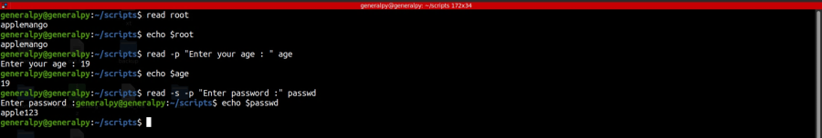
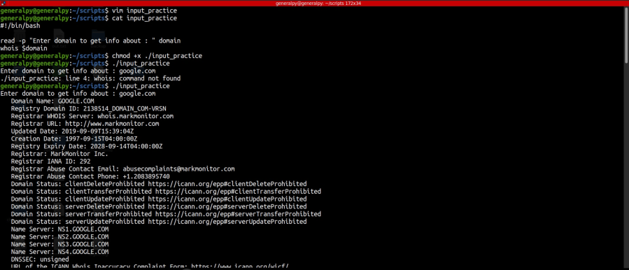

We can read console input in bash and store its value in a variable using read command.
read variableWhen this command is executed, terminal waits for user input until enter or newline is pressed.
To show user some text/prompt when entering values, use -p option.
To accept input silently or without echoing it use -s flag. This is useful when asking for passwords.

